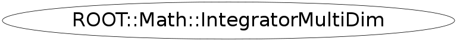

class ROOT::Math::IntegratorMultiDim
User class for performing multidimensional integration By default uses adaptive multi-dimensional integration using the algorithm from Genz Mallik implemented in the class ROOT::Math::AdaptiveIntegratorMultiDim otherwise it can uses via the plug-in manager the MC integration class (ROOT::Math::GSLMCIntegration) from MathMore. @ingroup Integration
Function Members (Methods)
public:
| virtual | ~IntegratorMultiDim() |
| double | Error() const |
| ROOT::Math::VirtualIntegratorMultiDim* | GetIntegrator() |
| static string | GetName(ROOT::Math::IntegrationMultiDim::Type) |
| static ROOT::Math::IntegrationMultiDim::Type | GetType(const char* name) |
| double | Integral(const double* xmin, const double* xmax) |
| double | Integral(const ROOT::Math::IMultiGenFunction& f, const double* xmin, const double* xmax) |
| ROOT::Math::IntegratorMultiDim | IntegratorMultiDim(ROOT::Math::IntegrationMultiDim::Type type = IntegrationMultiDim::kDEFAULT, double absTol = 0, double relTol = 0, unsigned int ncall = 0) |
| ROOT::Math::IntegratorMultiDim | IntegratorMultiDim(const ROOT::Math::IMultiGenFunction& f, ROOT::Math::IntegrationMultiDim::Type type = IntegrationMultiDim::kDEFAULT, double absTol = 0, double relTol = 0, unsigned int ncall = 0) |
| string | Name() const |
| ROOT::Math::IntegratorMultiDimOptions | Options() const |
| double | Result() const |
| void | SetAbsTolerance(double absTol) |
| void | SetFunction(const ROOT::Math::IMultiGenFunction& f) |
| void | SetOptions(const ROOT::Math::IntegratorMultiDimOptions& opt) |
| void | SetRelTolerance(double relTol) |
| int | Status() const |
protected:
| ROOT::Math::VirtualIntegratorMultiDim* | CreateIntegrator(ROOT::Math::IntegrationMultiDim::Type type, double absTol, double relTol, unsigned int ncall) |
private:
| ROOT::Math::IntegratorMultiDim | IntegratorMultiDim(const ROOT::Math::IntegratorMultiDim&) |
| ROOT::Math::IntegratorMultiDim& | operator=(const ROOT::Math::IntegratorMultiDim&) |
Data Members
private:
| auto_ptr<ROOT::Math::IBaseFunctionMultiDim> | fFunc | pointer to owned function |
| ROOT::Math::VirtualIntegratorMultiDim* | fIntegrator | pointer to multi-dimensional integrator base class |
Class Charts
{kind=link}
{kind=link}
{kind=link}
{kind=link}

Function documentation
IntegratorMultiDim(ROOT::Math::IntegrationMultiDim::Type type = IntegrationMultiDim::kDEFAULT, double absTol = 0, double relTol = 0, unsigned int ncall = 0)
Generic constructor of multi dimensional Integrator. By default uses the Adaptive integration method
@param type integration type (adaptive, MC methods, etc..)
@param absTol desired absolute Error
@param relTol desired relative Error
@param size maximum number of sub-intervals
In case no parameter values are passed the default ones used in IntegratorMultiDimOptions are used
IntegratorMultiDim(const ROOT::Math::IMultiGenFunction& f, ROOT::Math::IntegrationMultiDim::Type type = IntegrationMultiDim::kDEFAULT, double absTol = 0, double relTol = 0, unsigned int ncall = 0)
Generic Constructor of multi dimensional Integrator passing a function. By default uses the adaptive integration method
@param f integration function (multi-dim interface)
@param type integration type (adaptive, MC methods, etc..)
@param absTol desired absolute Error
@param relTol desired relative Error
@param ncall number of function calls (apply only to MC integratioon methods)
SetFunction(const ROOT::Math::IMultiGenFunction& f)
virtual ~IntegratorMultiDim()
remove template constructor since is ambigous
Template Constructor of multi dimensional Integrator passing a generic function. By default uses the adaptive integration method
@param f integration function (generic function implementin operator()(const double *)
@param dim function dimension
@param type integration type (adaptive, MC methods, etc..)
@param absTol desired absolute Error
@param relTol desired relative Error
@param ncall number of function calls (apply only to MC integratioon methods)
this is ambigous
template<class Function>
IntegratorMultiDim(Function & f, unsigned int dim, IntegrationMultiDim::Type type = IntegrationMultiDim::kADAPTIVE, double absTol = 1.E-9, double relTol = 1E-6, unsigned int ncall = 100000) {
fIntegrator = CreateIntegrator(type, absTol, relTol, ncall);
SetFunction(f, dim);
}
destructor
IntegratorMultiDim(const ROOT::Math::IntegratorMultiDim& )
disable copy constructur and assignment operator
{}double Integral(const double* xmin, const double* xmax)
evaluate the integral with the previously given function between xmin[] and xmax[]
double Integral(const ROOT::Math::IMultiGenFunction& f, const double* xmin, const double* xmax)
evaluate the integral passing a new function
double Result() const
return result of last integration
{ return fIntegrator == 0 ? 0 : fIntegrator->Result(); }double Error() const
return integration error
{ return fIntegrator == 0 ? 0 : fIntegrator->Error(); }void SetRelTolerance(double relTol)
return number of function evaluations in calculating the integral unsigned int NEval() const { return fNEval; } set the relative tolerance
{ if (fIntegrator) fIntegrator->SetRelTolerance(relTol); }void SetAbsTolerance(double absTol)
set absolute tolerance
{ if (fIntegrator) fIntegrator->SetAbsTolerance(absTol); }void SetOptions(const ROOT::Math::IntegratorMultiDimOptions& opt)
set the options
{ if (fIntegrator) fIntegrator->SetOptions(opt); }VirtualIntegratorMultiDim * GetIntegrator()
return a pointer to integrator object
{ return fIntegrator; }std::string Name() const
return name of integrator
{ return (fIntegrator) ? Options().Integrator() : std::string(""); }IntegrationMultiDim::Type GetType(const char* name)
static function to get the enumeration from a string
std::string GetName(ROOT::Math::IntegrationMultiDim::Type )
static function to get a string from the enumeration
VirtualIntegratorMultiDim * CreateIntegrator(ROOT::Math::IntegrationMultiDim::Type type, double absTol, double relTol, unsigned int ncall)